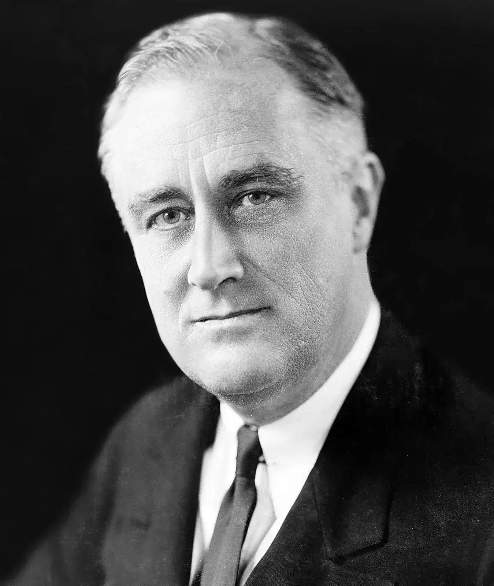

Franklin Delano Roosevelt
(30 January 1882 – 12 April 1945)
Franklin Delano Roosevelt (30 January 1882 – 12 April 1945) was the 32nd President of the United States, serving from 1933 until his death in 1945. He is the only U.S. president to have been elected to four terms. Roosevelt led the country during two major crises: the Great Depression and most of World War II. He introduced a series of economic programs known as the New Deal to address the economic downturn and later played a central role in coordinating the Allied effort against the Axis powers. His presidency significantly shaped modern American government and international relations.